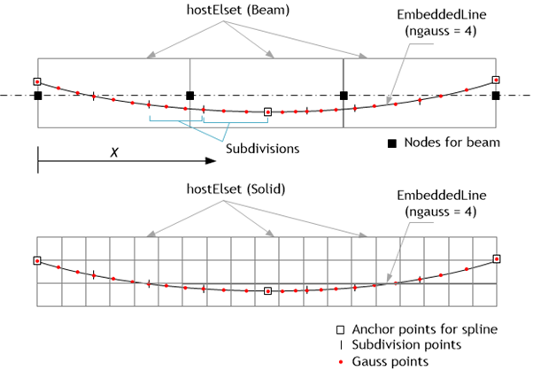

MCK 요소
Spring 요소 타입으로 2절점 스프링/댐퍼 요소를, EarthSpring으로 1절점 스프링/댐퍼 요소를, PointMass로 1절점 집중질량을 정의할 수 있다. 이들 요소들은 X, Y, Z, RX, RY, RZ 방향의 스프링/댐퍼 또는 집중질량을 원하는 만큼 정의할 수 있다. 이들 요소는 모두 MCK 단면 타입을 사용하며, *CoordinateSystem, TYPE=Orientation으로 정의한 요소좌표계와 스케일링 계수(scaling factor)를 개별 물성치로 가진다.
다음 예에서 1001번 스프링은 X방향 스프링 계수 10, Y방향 스프링 계수 20인 스프링을 가진 스프링이다. 1002번 요소는 스케일링 계수를 0.5를 적용하여 X,Y 스프링 계수를 5, 10으로 조정한다. 1003번 요소는 요소의 좌표계를 별도로 지정한 것이다. 요소좌표계를 별도로 지정하지 않으면 GCS가 사용된다.
Example
*Section, Type=Spring, Name=springSection
Spring, X, 10
Spring, Y, 20.
*CoordinateSystem, TYPE=UCS, Name=springCS
0,1,0, -1, 0, 0
*Element, Type=Spring, ELSet=sp
1001, 1001, 1002, S=springSection
1002, 1001, 1002, S=springSection, SF=0.5
1003, 1002, 1003, S=springSection, CS=springCS
Example
*Node
1001, 0,0,0
*Element, Type=PointMass, ELSet=pm
1001, 1001
*Section, Type=MCK, Name=pmSec
Mass, 100., 10., 10. 10 , # m, Ix, Iy, Iz, rx, ry, rz
*Distribution, TYPE=Section
pm, pmSec

Fig. 4.11-1. Spring과 Damper 요소
Fig. 4.11-2. EarthSpring 요소
Fig. 4.11-3. PointMass 요소
부호 규약
Spring 및 EarthSpring 요소는 연결하는 절점의 좌표값과 무관하게 정식화가 수행되기 때문에 내력과 변형의 부호 해석에 유의해야 한다. 내력과 변형은 요소의 국부좌표계(ECS)를 기준으로 결정된다. 만약 ECS를 지정하지 않으면 ECS는 전체좌표계(GCS)와 같다. 다음은 스프링 및 댐퍼 요소들의 부호규약을 정리한 것이다.
(1) Spring 요소
별도의 국부좌표계를 지정하지않고(즉, 국부좌표계는 전체좌표계) 강체팔(rigid arm)이 없을 경우 끝단 절점의 변위에서 시작단 절점의 변위를 뺀 값( \(\delta = u_2 - u_1\))으로 정의된다. 예를 들어 X 방향으로 연결되는 스프링을 1개 갖는 Spring 요소에서 변형을 다음과 같다.
변형 \(\small\Delta U\)가 +라는 것은 인장을 의미하는 것이 아닌 양단 절점 중 끝단 절점의 변형이 더 크다는 것을 의미한다. 내력의 부호 역시 동일한 방식으로 해석할 수 있으며, Damper 역시 동일한 부호를 사용한다. 그림 4.11-4는 Spring의 부호 규약을 나타낸 그림이다. Tension spring은 내력 및 변형의 부호가 + 인 경우 인장이 작용하고 있음을 의미하고, Compression spring은 압축이 작용함을 의미한다.

Fig. 4.11-4. 국부좌표계를 지정하지 않는 경우 Spring 요소의 부호 규약
만약 국부좌표계가 별도로 지정되어 있다면 국부좌표계를 기준으로 변형을 정의한다.
별도의 국부좌표계를 지정하지않고(즉, 국부좌표계는 전체좌표계) 강체팔이 없는 경우 EarthSpring의 변형은 주어진 절점의 변위와 동일한 것으로 정의된다(\(\delta = u_1\)). 예를 들어 X 방향으로 연결되는 스프링을 1개 갖는 EarthSpring 요소에서 변형을 다음과 같다.
이 경우 역시 \(\small\Delta U\) 가 +인 경우 인장이 아닌 연결된 절점의 변위가 -인 것을 의미하며, 내력의 부호 역시 동일한다. EarthDamper 역시 동일한 방식으로 정의되어 있다. 그림 4.11-5는 EarthSpring의 부호 규약을 나타낸 그림이다. Tension spring은 내력 및 변형의 부호가 + 인 경우 인장이 작용하고 있음을 의미하고, Compression spring은 압축이 작용함을 의미한다.

Fig. 4.11-5. 국부좌표계를 지정하지 않는 경우 EarthSprng의 부호 규약
만약 국부좌표계가 별도로 지정되어 있다면 국부좌표계를 기준으로 변형을 정의한다.
*Element, Type=Spring
*Element, Type=Spring, ELSet=elset
id, n1, n2{, S=section, CS=cs, SF=sf}
...
Specifications
- No. of nodes: 2
- No. of integration pts.: 1
- Fields: SF=[...], SE=[...], DF=[...], DE=[...] at element center.
- Compatible section: MCK
- Active DOFs: Combination of X, Y, Z, RX, RY, RZ
- CS: ECS with the type of
*CoordinateSystem, TYPE=Orientation - SF: Scaling factor
SF는 Spring Force, SE는 Spring Deformation, DF는 Damping Force, DE는 Damping deformation rate를 의미하며, 사용하는 자유도에 따라 구성성분이 결정됨. 예를 들어 Y, Z자유도를 사용하는 스프링이라면 SF=[SF.Y, SF.Z], SE=[SE.Y, SE.Z] 등의 순서로 기록됨.
*Element, Type=EarthSpring
*Element, Type=Spring, ELSet=elset
id, n1{, S=section, CS=cs, SF=sf}
...
Specifications
- No. of nodes: 1
- No. of integration points: 1
- Fields: SF=[...], SE=[...], DF=[...], DE=[...] at the element center.
- Compatible section: MCK
- Active DOFs: Combination of X, Y, Z, RX, RY, RZ
- CS: ECS with the type of
*CoordinateSystem, TYPE=Orientation - SF: Scaling factor
SF, SE, DF, DE 등에 대한 설명은 *Element, TYPE=Spring 참조
*Element, Type=PointMass
집중질량요소의 단면을 정의한다.
*Element, Type=PointMass, ELSet=elset
id, n1{, S=section, CS=cs, SF=sf}
...
Specifications
- No. of nodes: 1
- No. of integration pts.: None
- Fields: None
- Compatible section: MCK
- Active DOFs: Combination of X, Y, Z, RX, RY, RZ
- CS: ECS with the type of
*CoordinateSystem, TYPE=Orientation - SF: Scaling factor
*Section, Type=MCK
Spring, EarthSpring, PointMass 등 MCK 요소를 위한 단면을 정의
*Section, Type=MCK, Name=name
Spring, oneDof, k, km
...
Damper, oneDof, c, cm
...
Mass, m,Ix,Iy,Iz
...
xRigid1,yRigid1,zRigid1, xRigid2,yRigid2,zRigid2,
First and subsequent dataline if necessary
- oneDof: 스프링/댐퍼를 적용할 자유도, X, Y, Z, RX, RY, RZ 중 하나
- k, km: 주어진 자유도에 대한 스프링 계수와 모델, km은 옵션
- c, cm: 주어진 자유도에 대한 스프링 계수와 모델, km은 옵션
- m, Ix, Iy, Iz: mass (required) and rotational inertia (optional, default 0,0,0)
Last dataline if necessary
- xRigid1,yRigid1,zRigid1: position vector from ref. node (rigid arm vector) (optional, default 0,0,0)
- xRigid2,yRigid2,zRigid2: position vector from ref. node (rigid arm vector) (optional, default 0,0,0)
Example
*Section, Type=MCK, Name=springSection
Spring, X, 10
Spring, Y, 20.
Damper, X, 5
0,1,0, 0,2,0
*Section, Type=MCK, Name=springSection
Mass, 100
0,1,0, 0,2,0